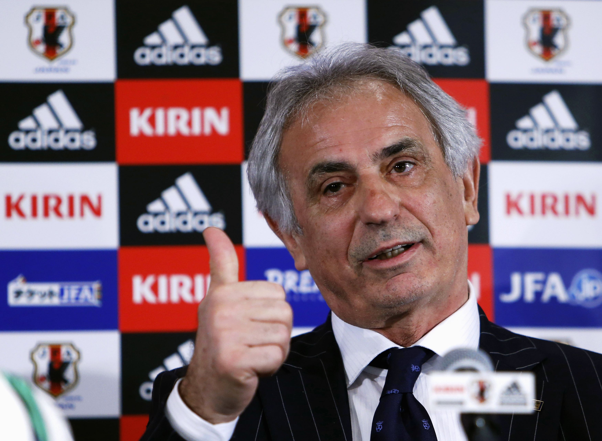

JAPON
La selección de fútbol de Japón es el equipo representativo del país y esta afiliado desde 1921 a la Asociación Japonesa de Fútbol en las competiciones oficiales organizadas por la Confederación Asiática de Fútbol y la Federación Internacional de Asociaciones de Fútbol.
Okazaki

Honda
Mutō
Sugimoto
Ōsako

Khedira
Kagawa
Inui
Yoshida
Sakai
Higashiguchi

Vahid Halilhodžić es un ex futbolista internacional y entrenador bosnio. Actualmente, dirige a la selección de fútbol del Japón.Los métodos de entrenamiento de Vahid se caracterizan por el rigor profesional, la disciplina y la dedicación.Adquirió una reputación como entrenador duro, incluso "tiránico". Por ello, se le apodó "Coach Vahid".